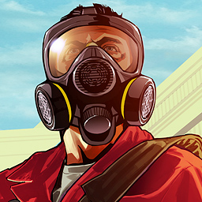

<ion-header>
    <ion-toolbar color="primary">
      <ion-buttons slot="start">
        <ion-back-button defaultHref="/settings/notifications" text=""></ion-back-button>
      </ion-buttons>
      <ion-title>Choose the chat</ion-title>
    </ion-toolbar>
  </ion-header>
  
  <ion-content color="dark">

    <ion-toolbar color="primary">
      <ion-searchbar showCancelButton cancelButtonIcon="close"></ion-searchbar>
    </ion-toolbar>

    <ion-list class="list-group">
        <ion-item color="dark" >
          <ion-avatar slot="start">
            
          </ion-avatar>
          <ion-label text-wrap>
            <ion-text>
              <h3>User 1</h3>
            </ion-text>
            <ion-text class="float-right" color="medium">
              <small>13 Feb 2019</small>
            </ion-text>
            <ion-text color="light">
              <p><ion-text color="success"><small>Andres:</small></ion-text><small>Silenced</small></p>
            </ion-text>
          </ion-label>
        </ion-item>
    </ion-list>
  
  </ion-content>